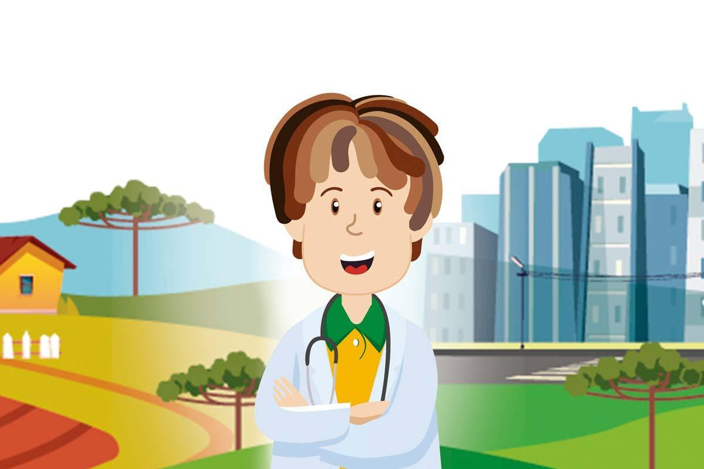

O Agrinho, através de diversas atividades, promove aos estudantes e a comunidade em geral, valores cívicos e sociais importantes, como o respeito, a solidariedade, e a importância do trabalho em equipe. Isso ajuda a formar cidadãos mais conscientes e engajados com sua comunidade promovendo uma conscientização maior da importância e da convivência em sociedade.